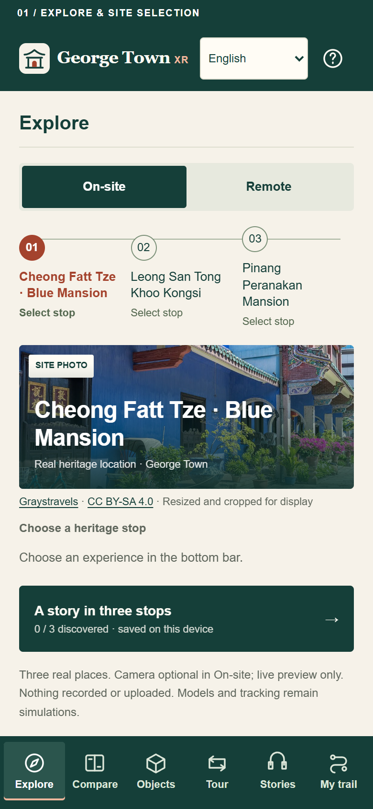
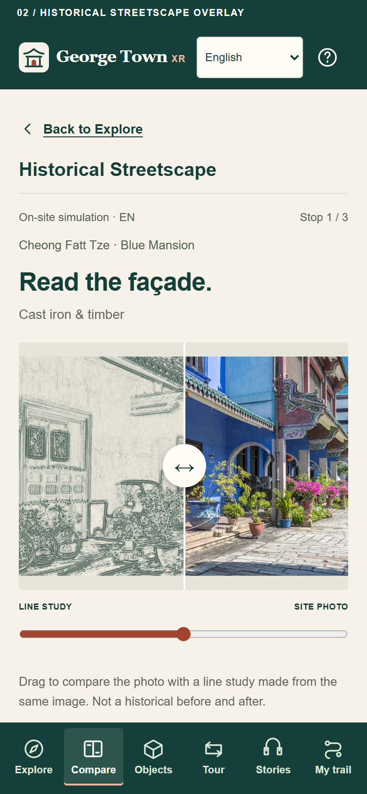
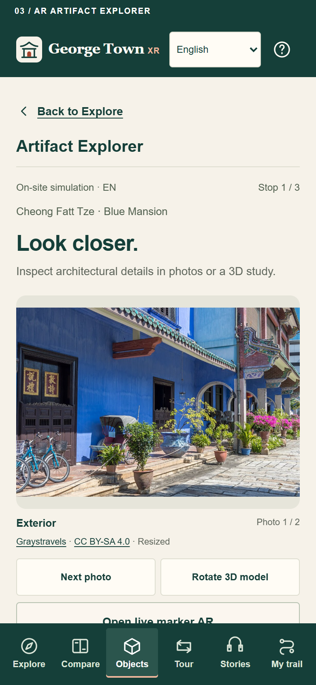
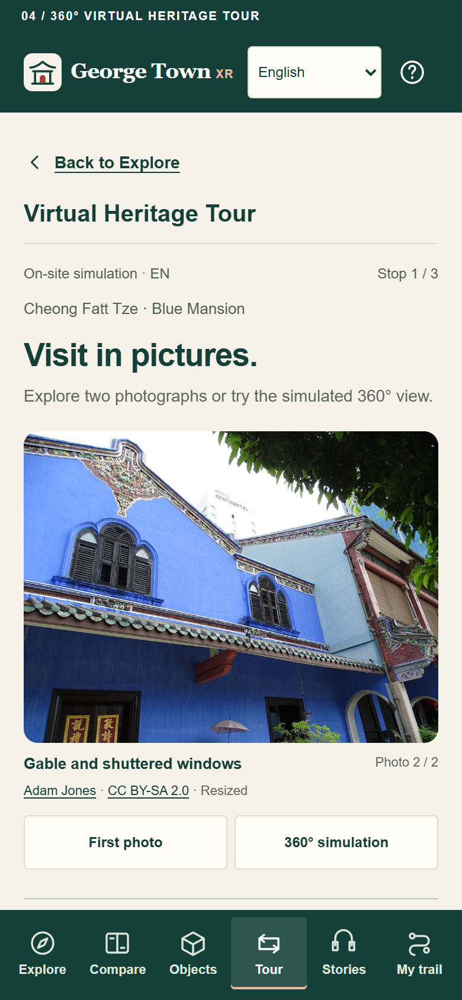
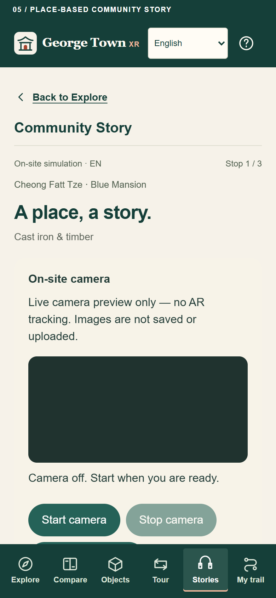
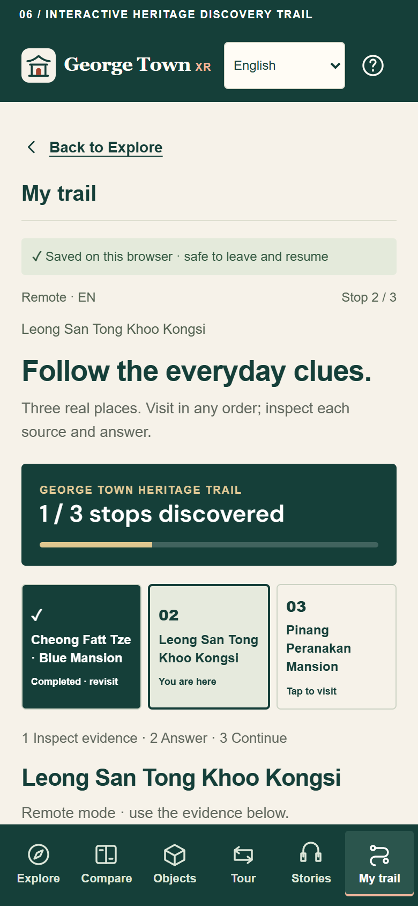

ITS63504 · Human Computer Interaction · Six-screen alpha
Open clickable prototype ↗ · Mobile captures at 390px. Six persistent bottom tabs: Explore, Compare, Objects, Tour, Stories, My trail. About is available from Help. Full-length screenshots.





